TRƯỜNG ĐẠI HỌC THỦY LỢI
KHOA CÔNG NGHỆ THÔNG TIN
BỘ MÔN CÔNG NGHỆ PHẦN MỀM
| Nhóm thực hiện: | Nhóm 10 |
| Sinh viên thực hiện: |
1. Nguyễn Gia Huy – MSV: 2551170897 (Trưởng nhóm) 2. Đào Viết Huy Hoàng – MSV: 2551170888 (Thành viên) |
| Link GitHub của nhóm: | https://github.com/xalambay07-svg/cse122-onboardai-nhom10 |
| Link bảng Trello: | https://trello.com/b/J0c8nZ2l |
Trong khuôn khổ môn học Phát triển ứng dụng Web cơ bản (CSE122), nhóm chúng em (Nhóm 10) được giao thực hiện đề tài BTL-20: Xây dựng website hỗ trợ hành trình hội nhập cho nhân sự mới (OnboardAI). Thông qua bài tập lớn này, nhóm đã vận dụng các kiến thức được học trên lớp bao gồm HTML5, CSS3 (kết hợp thư viện Tailwind CSS), ngôn ngữ lập trình JavaScript (xử lý DOM, sự kiện, kiểm tra dữ liệu biểu mẫu) và lưu trữ dữ liệu tạm thời trên trình duyệt bằng localStorage.
Ban đầu nhóm có 3 thành viên, tuy nhiên trong quá trình thực hiện có 1 bạn nghỉ học nên nhóm còn lại 2 thành viên là Nguyễn Gia Huy (MSV: 2551170897) và Đào Viết Huy Hoàng (MSV: 2551170888). Hai thành viên đã chủ động chia lại công việc để hoàn thiện đầy đủ các màn hình theo đúng yêu cầu của đề bài. Do kiến thức và thời gian còn hạn chế, sản phẩm của nhóm mới dừng lại ở mức ứng dụng Frontend chạy trên trình duyệt (chưa có Backend và cơ sở dữ liệu thực tế). Nhóm rất mong nhận được sự góp ý của thầy/cô để hoàn thiện hơn trong các môn học tiếp theo.
| Phần | Nội dung | File tài liệu trong repo |
|---|---|---|
| Phần 1 | Giới thiệu đề tài, bài toán thực tế và mục tiêu của website | docs/project-proposal.md |
| Phần 2 | Phân tích các nhóm người dùng và 3 chức năng hỗ trợ thông minh | docs/roles-and-features.md |
| Phần 3 | Danh sách các màn hình và chức năng đã xây dựng | docs/screen-inventory.md |
| Phần 4 | Phân công công việc trong nhóm, quản lý Trello và sử dụng Git/GitHub | docs/team-assignment.md |
| Phần 5 | Minh chứng 03 video quay màn hình bằng OBS và lịch sử Commit | docs/obs-evidence.md |
| Phần 6 | Báo cáo việc sử dụng công cụ AI hỗ trợ trong quá trình làm bài | docs/ai-usage-report.md |
| Phần 7 | Tự đánh giá kết quả đạt được, hạn chế của đề tài và hướng phát triển | README.md |
Khi một nhân viên mới bắt đầu vào làm việc tại công ty (thường có 2 tháng thử việc), họ phải làm quen với rất nhiều thủ tục như: nhận máy tính, cài đặt phần mềm, đọc nội quy công ty, tìm hiểu quy định nghỉ phép, gửi xe, bảo hiểm và làm quen với người hướng dẫn (Mentor). Nếu chỉ gửi qua nhiều file Word, Excel hoặc email rời rạc thì nhân viên mới rất dễ quên việc hoặc không biết hỏi ai, còn bộ phận Nhân sự (HR) cũng khó theo dõi xem ai đã làm xong, ai đang bị trễ hạn.
Nhóm xây dựng website OnboardAI nhằm giải quyết các nhu cầu cơ bản sau:
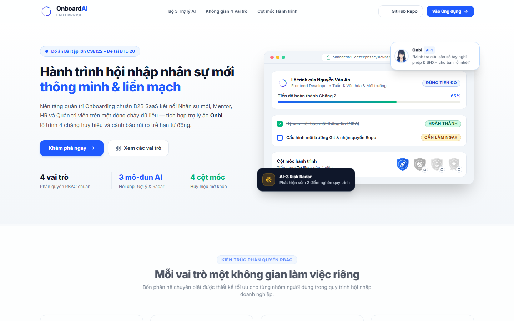
Hình 1.1. Giao diện Trang chủ giới thiệu đề tài OnboardAI (index.html)
Website được chia thành 4 nhóm tài khoản đăng nhập tương ứng với 4 vai trò:
| Vai trò | Tài khoản chạy thử (Mật khẩu: 123456) |
Các chức năng chính trên giao diện | Các file HTML |
|---|---|---|---|
| 1. Nhân viên mới (New Hire) |
an.nguyen@onboardai.vnnam.le@onboardai.vn |
Xem phần trăm tiến độ công việc và 4 huy hiệu; xem danh sách 8 Mentor gợi ý và mở khung chat nhắn tin; tìm kiếm/lọc công việc trong Checklist, nộp link minh chứng; hỏi đáp nội quy tại trang Trợ lý Onbi. | newhire-onboarding-dashboard.htmlnewhire-checklist.htmlnewhire-ai-help.html |
| 2. Người hướng dẫn (Mentor) |
mentor@onboardai.vnminh.nguyen@onboardai.vn |
Xem danh sách nhân viên mới đang hướng dẫn; lọc theo trạng thái tiến độ; tạo phiếu ghi chú đánh giá định kỳ; chọn vị trí công việc để sinh danh sách nhiệm vụ mẫu. | mentor-mentee-list.htmlmentor-checkin-note.htmlmentor-task-assignment.html |
| 3. Nhân sự (HR) |
hr@onboardai.vn |
Xem 4 ô số liệu tổng quan; xem biểu đồ cột và biểu đồ tròn (dùng thư viện Chart.js); xem danh sách nhân viên bị chậm tiến độ hoặc kẹt quyền IT để bấm gửi nhắc việc. | hr-dashboard.html |
| 4. Quản trị viên (Admin) |
admin@onboardai.vn |
Xem danh sách tài khoản, tìm kiếm/lọc theo vai trò; thêm hoặc sửa tài khoản (có kiểm tra dữ liệu nhập); khóa/mở khóa tài khoản; xem bảng quyền và nhật ký hoạt động; bấm chuyển sang xem thử góc nhìn của nhân viên mới hoặc Mentor. | admin-user-management.html |
Do chưa sử dụng máy chủ hay gọi API trả phí bên ngoài, nhóm đã sử dụng JavaScript thuần kết hợp dữ liệu JSON để mô phỏng 3 chức năng hỗ trợ thông minh theo yêu cầu của đề bài:
| Chức năng | Tên chức năng & Trang đặt | Cách xử lý bằng JavaScript trong code | Xử lý khi không tìm thấy kết quả |
|---|---|---|---|
| AI-1 | Chat hỏi đáp quy chế công ty (Onbi) ( newhire-ai-help.html) |
Nhóm khai báo mảng KNOWLEDGE_BASE chứa các câu hỏi thường gặp (nghỉ phép, bảo hiểm, gửi xe, lương...). Khi người dùng nhập câu hỏi, hàm JavaScript bỏ dấu tiếng Việt, so sánh từ khóa để cộng điểm và trả về câu trả lời có điểm cao nhất kèm dòng trích dẫn sổ tay. |
Nếu có 2 mục bằng điểm nhau thì hiện 2 nút để người dùng chọn lại. Nếu câu hỏi không khớp từ khóa nào thì hiện nút gửi câu hỏi đó cho bộ phận HR. |
| AI-2 | Gợi ý người đồng hành (Mentor) & gợi ý việc theo vị trí ( newhire-onboarding-dashboard.html) |
So sánh phòng ban và vị trí của nhân viên mới với danh sách 8 Mentor có sẵn để tính điểm phù hợp (%) và xếp 3 Mentor cùng bộ phận lên đầu danh sách. Ở trang Mentor, chọn vị trí nào sẽ lấy mảng công việc mẫu của vị trí đó hiển thị ra. | Nhân viên mới vẫn có thể bấm nút "Xem 8 Mentor" để tự chọn hoặc đổi sang người hướng dẫn khác. |
| AI-3 | Phát hiện sớm nhân sự có nguy cơ trễ hạn ( hr-dashboard.html) |
Duyệt qua danh sách nhân viên mới trong localStorage, kiểm tra các điều kiện: tiến độ thấp dưới 30% hoặc có công việc đang ở trạng thái blocked (chờ cấp quyền IT) để đưa vào bảng cảnh báo ở đầu trang HR. |
Khi bấm nút nhắc việc, hệ thống mở khung chứa sẵn nội dung tin nhắn mẫu, cho phép HR sửa lại chữ trước khi bấm gửi. |
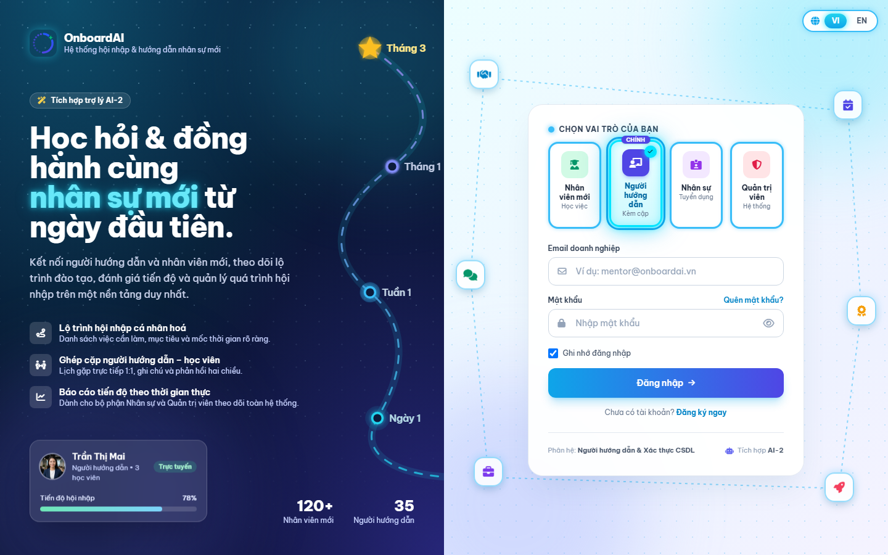
Hình 2.1. Giao diện Đăng nhập và chọn nhanh tài khoản 4 vai trò (login.html)
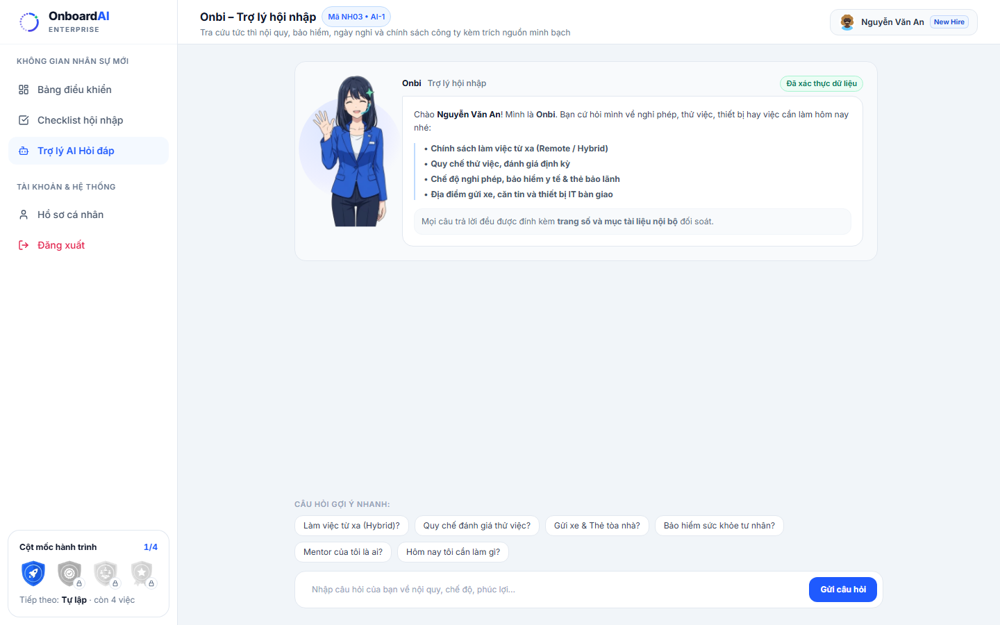
Hình 2.2. Giao diện Trợ lý hỏi đáp nội quy Onbi – Mô phỏng chức năng AI-1 (newhire-ai-help.html)
| STT | Tên màn hình & File code | Vai trò | Các thao tác dữ liệu & trạng thái giao diện đã làm | Sinh viên thực hiện |
|---|---|---|---|---|
| 1 | Trang chủ giới thiệuindex.html |
Dùng chung | Hiển thị thông tin giới thiệu đề tài, 4 vai trò người dùng, 3 tính năng AI và 4 cột mốc huy hiệu; chuyển sang trang đăng nhập hoặc các phân hệ. | Nguyễn Gia Huy (2551170897) |
| 2 | Bảng điều khiển Nhân viên mớinewhire-onboarding-dashboard.html |
New Hire | Xem tiến độ tổng thể, danh sách việc cần làm trong ngày, chọn 1 trong 8 Mentor, nhắn tin trực tiếp với Mentor (lưu vào localStorage), nút bấm báo cáo nhanh tiến độ. |
Nguyễn Gia Huy (2551170897) |
| 3 | Checklist công việc 4 chặngnewhire-checklist.html |
New Hire | Chuyển đổi 4 tab giai đoạn, tìm kiếm theo từ khóa, lọc theo danh mục và trạng thái; hiện thông báo rỗng (Empty State) kèm nút xóa bộ lọc khi không có kết quả; tích hoàn thành và nộp link minh chứng. | Nguyễn Gia Huy (2551170897) |
| 4 | Trợ lý hỏi đáp quy chế Onbinewhire-ai-help.html |
New Hire | Gợi ý câu hỏi khi đang gõ phím, hiệu ứng đang trả lời (Loading), hiển thị câu trả lời kèm nguồn trích dẫn, chuyển câu hỏi cho HR khi ngoài dữ liệu. | Nguyễn Gia Huy (2551170897) |
| 5 | Bảng điều khiển Nhân sự HRhr-dashboard.html |
HR | Hiển thị 4 thẻ số liệu, khối cảnh báo nhân sự trễ hạn (AI-3) kèm cửa sổ gửi nhắc nhở, 2 biểu đồ thống kê bằng Chart.js và bảng tìm kiếm/lọc nhân viên mới. |
Nguyễn Gia Huy (2551170897) |
| 6 | Quản trị tài khoản & Phân quyềnadmin-user-management.html |
Admin | Tìm kiếm, lọc tài khoản; thêm/sửa tài khoản có kiểm tra dữ liệu nhập (Form Validation báo lỗi chữ đỏ); khóa/mở khóa tài khoản; xem bảng quyền RBAC, nhật ký hoạt động và chế độ xem thử (View-As). | Nguyễn Gia Huy (2551170897) |
| 7 | Trang Đăng nhậplogin.html |
Dùng chung | Kiểm tra rỗng và định dạng email/mật khẩu, báo lỗi khi đăng nhập sai hoặc tài khoản bị khóa, hỗ trợ nút chọn nhanh tài khoản mẫu để test. | Đào Viết Huy Hoàng (2551170888) |
| 8 | Quản lý danh sách Menteementor-mentee-list.html |
Mentor | Xem danh sách nhân viên mới được phân công, lọc theo trạng thái, ghi chú đánh giá 1-on-1 (mentor-checkin-note.html) và giao việc mẫu (mentor-task-assignment.html). |
Đào Viết Huy Hoàng (2551170888) |
| 9 | Hồ sơ cá nhân & Dữ liệu chungprofile.html, js/api.js |
Dùng chung | Cập nhật thông tin cá nhân, đổi mật khẩu; khởi tạo dữ liệu ban đầu từ assets/data/mock-data.json vào localStorage. |
Đào Viết Huy Hoàng (2551170888) |
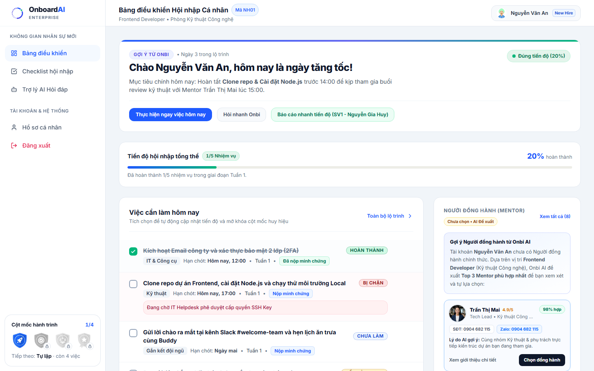
Hình 3.1. Màn hình Bảng điều khiển Nhân viên mới và gợi ý Mentor AI-2 (newhire-onboarding-dashboard.html)
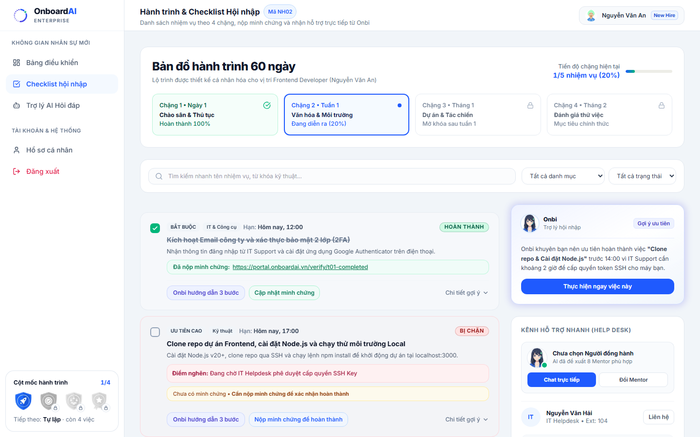
Hình 3.2. Màn hình Checklist công việc 4 chặng và nộp link minh chứng (newhire-checklist.html)
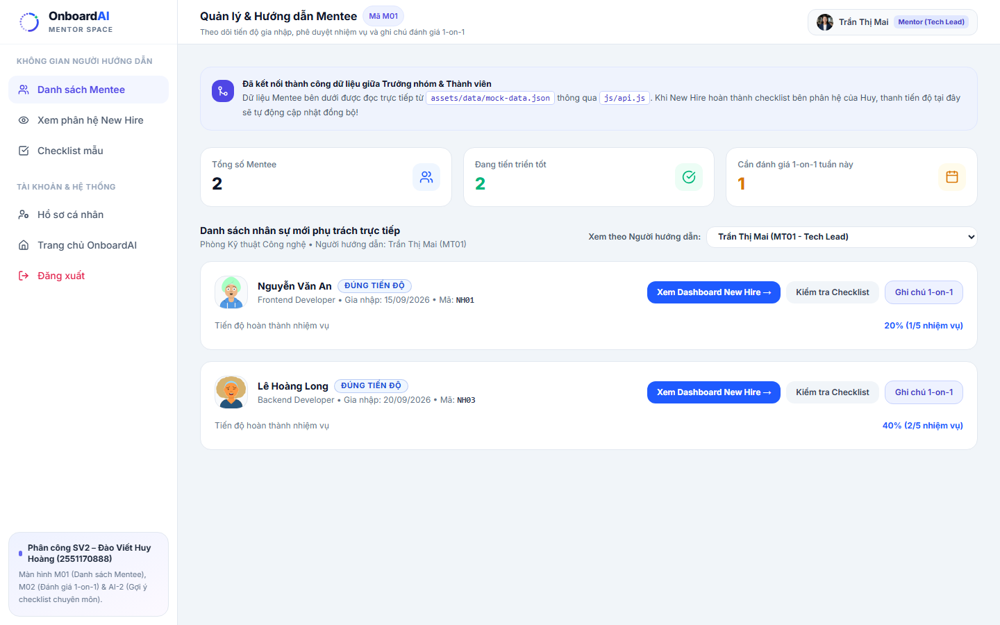
Hình 3.3. Màn hình Quản lý danh sách Mentee của Người hướng dẫn (mentor-mentee-list.html)
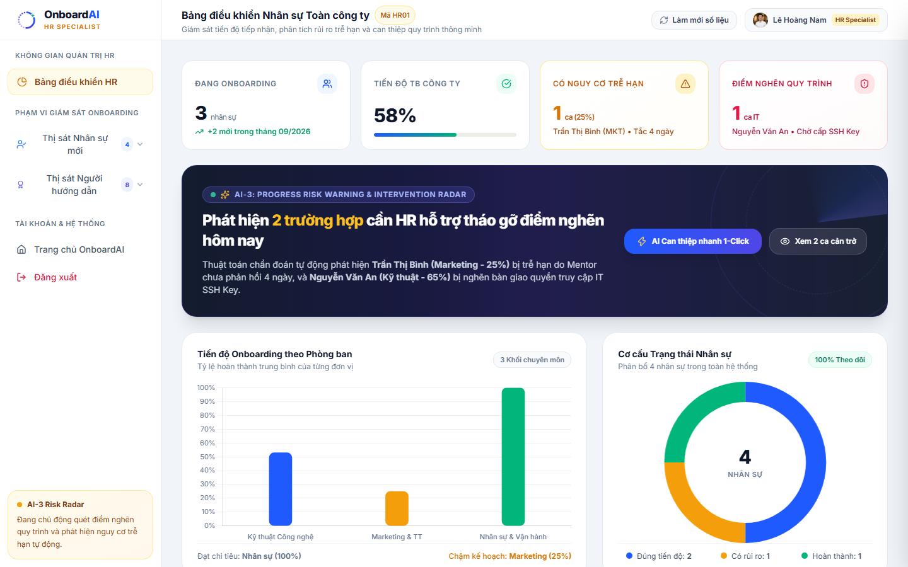
Hình 3.4. Màn hình Bảng điều khiển Nhân sự HR, cảnh báo AI-3 và biểu đồ Chart.js (hr-dashboard.html)
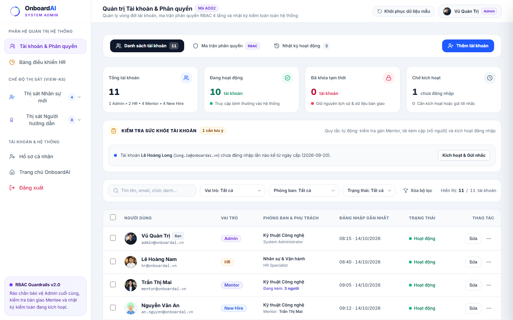
Hình 3.5. Màn hình Quản trị tài khoản và phân quyền của Admin (admin-user-management.html)
| Họ tên & Mã sinh viên | Vai trò | Công việc thực hiện cụ thể | Nhánh Git sử dụng |
|---|---|---|---|
| Nguyễn Gia Huy MSV: 2551170897 |
Trưởng nhóm (SV1) |
- Dựng khung CSS chung (css/style.css) và Trang chủ (index.html).- Code toàn bộ 3 trang của Nhân viên mới (Dashboard, Checklist 4 chặng, Chat hỏi đáp Onbi AI-1). - Code trang Nhân sự HR (biểu đồ Chart.js, cảnh báo trễ hạn AI-3) và trang Quản trị Admin (thêm/sửa/khóa user, nhật ký hoạt động, chức năng xem thử View-As). - Tạo bảng Trello, quản lý các nhánh Git, tạo Pull Request và quay 03 video OBS báo cáo. |
huy/feature/newhire-checklistfix/sv3-data-sync-hr-admin |
| Đào Viết Huy Hoàng MSV: 2551170888 |
Thành viên (SV2) |
- Xây dựng file dữ liệu gốc assets/data/mock-data.json và các hàm đọc/ghi localStorage trong js/api.js.- Code trang Đăng nhập ( login.html) và trang Hồ sơ cá nhân (profile.html).- Code các trang của Người hướng dẫn ( mentor-mentee-list.html, đánh giá 1-on-1 và gợi ý công việc AI-2).
|
feat/sv2-data-mentor |
https://trello.com/b/J0c8nZ2l. Nhóm chia thành 6 cột (Backlog, Sprint / To Do, In Progress, Review / Testing, Done, Tài liệu & Quy ước nhóm) với 25 thẻ công việc theo 4 tuần thực hiện.dev kiểm tra trước khi đưa lên nhánh main tại địa chỉ: https://github.com/xalambay07-svg/cse122-onboardai-nhom10.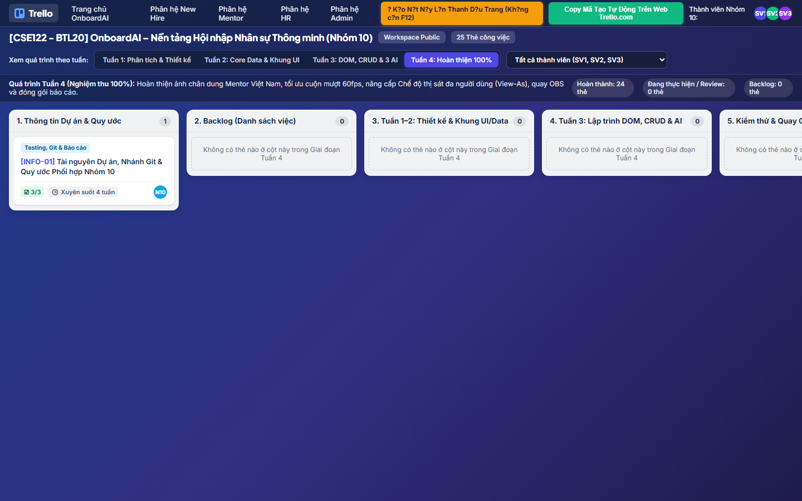
Hình 4.1. Bảng quản lý tiến độ 25 thẻ công việc theo 4 tuần của Nhóm 10 (trello-kanban.html)
Trưởng nhóm Nguyễn Gia Huy (MSV: 2551170897) đã thực hiện quay 03 video bằng phần mềm OBS Studio (có hiển thị màn hình code VS Code, trình duyệt chạy thực tế, webcam góc dưới phải và giọng nói giải thích trực tiếp). Trong mỗi video đều có phần gõ code trực tiếp trên VS Code, giải thích từng dòng và lưu lại chạy thử trên trình duyệt. Toàn bộ 03 file video đã được đẩy lên thư mục docs/obs-videos/ trên kho lưu trữ GitHub của nhóm.
| Video | File video & Màn hình demo | Nội dung giải thích code & Phần gõ code trực tiếp trên video | Mã Commit |
|---|---|---|---|
| Video 1 (~10 phút) |
File video:Video_OBS1_NguyenGiaHuy_2551170897.mp4Màn hình: - index.html- newhire-onboarding-dashboard.html
|
- Giải thích code: Bố cục lưới 12 cột ở trang chủ; hàm buildPersonalizedMentorCatalog() tính điểm gợi ý 8 Mentor; hàm saveMentorChatHistory() và generateSmartMentorReply() lưu tin nhắn chat vào localStorage.- Gõ code trực tiếp: Thêm nút bấm "Báo cáo nhanh tiến độ" ở dòng 219 và viết hàm showQuickProgressSummary() ở cuối file để đếm số công việc đã hoàn thành từ localStorage rồi hiển thị lên hộp thoại alert().
|
228fe052e48ef1abe6970 |
| Video 2 (~8.5 phút) |
File video:Video_OBS2_NguyenGiaHuy_2551170897.mp4Màn hình: - newhire-checklist.html- newhire-ai-help.html
|
- Giải thích code: Hàm renderTasksList() lọc công việc theo giai đoạn, từ khóa và hiển thị trạng thái rỗng (Empty State); hàm updatePhaseStats() tính phần trăm tiến độ; hàm normalize() và processAIResponse() tìm câu trả lời trong trang Onbi.- Gõ code trực tiếp: Gõ thêm 1 mục dữ liệu mới ( id: 'parking-card-policy' – Đăng ký vé gửi xe hầm B1 & B2) vào mảng KNOWLEDGE_BASE tại dòng 322, lưu file và hỏi thử trên khung chat.
|
e4d688f2e48ef19283bf0 |
| Video 3 (~10.5 phút) |
File video:Video_OBS3_NguyenGiaHuy_2551170897.mp4Màn hình: - hr-dashboard.html- admin-user-management.html
|
- Giải thích code: Hàm renderTable() lọc nhân viên trễ hạn và hàm initCharts() vẽ biểu đồ Chart.js ở trang HR; hàm renderUserTable(), impersonateSpecificPerson() và saveUserForm() ở trang Admin.- Gõ code trực tiếp: Viết thêm điều kiện else if (name.split(/\s+/).length < 2 || name.length < 5) tại dòng 2149 để kiểm tra họ tên nhập vào phải có từ 2 từ trở lên (tối thiểu 5 ký tự) mới cho phép lưu tài khoản.
|
3810ab02e48ef130e0865 |
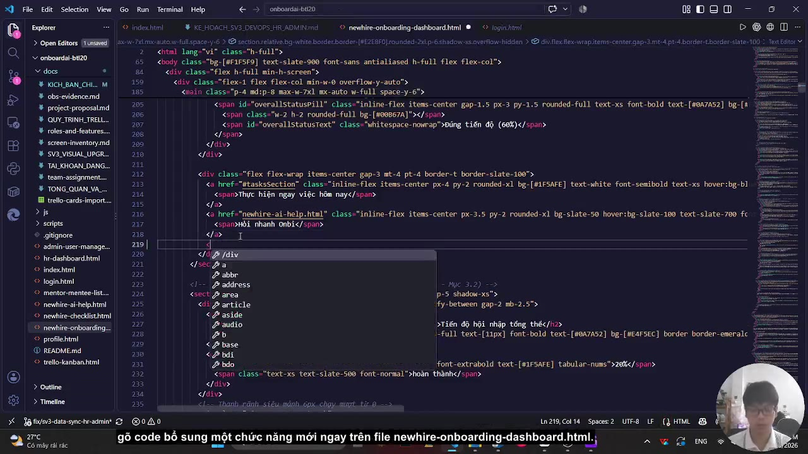
Hình 5.1. Ảnh cắt từ Video OBS 1 – Giải thích và gõ code trực tiếp trên trang newhire-onboarding-dashboard.html
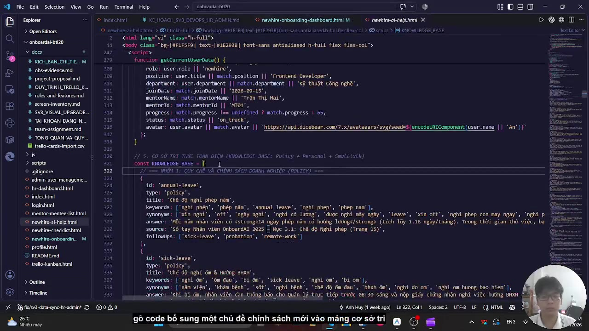
Hình 5.2. Ảnh cắt từ Video OBS 2 – Giải thích và gõ code thêm dữ liệu vào mảng KNOWLEDGE_BASE trên trang newhire-ai-help.html
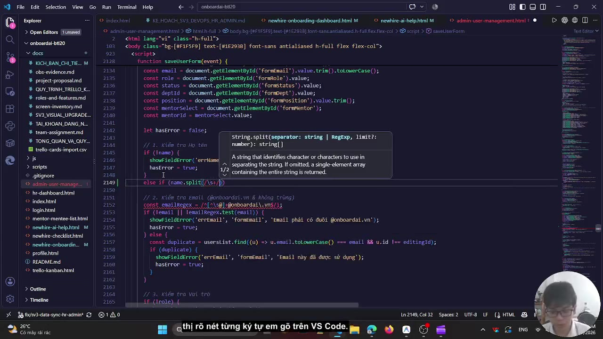
Hình 5.3. Ảnh cắt từ Video OBS 3 – Giải thích và gõ code kiểm tra hợp lệ họ tên (Form Validation) trên trang admin-user-management.html
Trong quá trình làm bài tập lớn, nhóm có sử dụng công cụ AI để tham khảo cách viết một số hàm JavaScript và chỉnh sửa giao diện CSS. Dưới đây là bảng tổng hợp các nội dung nhóm đã hỏi AI và cách nhóm tự chỉnh sửa lại:
| STT | Nội dung nhóm hỏi AI | Kết quả AI gợi ý ban đầu | Cách nhóm tự sửa lại code và kiểm tra |
|---|---|---|---|
| 1 | Cách bỏ dấu tiếng Việt và tìm kiếm câu trả lời theo từ khóa cho trang chat hỏi đáp nội quy (newhire-ai-help.html). |
AI gợi ý hàm dùng normalize('NFD') và kiểm tra bằng string.includes() đơn giản. |
Khi chạy thử, dùng includes() dễ bị khớp nhầm từ ngắn nằm trong từ dài. Nhóm đã sửa lại thành hàm containsPhrase() cộng khoảng trắng hai đầu và chia điểm cho từ khóa chính (+3 điểm), từ đồng nghĩa (+2 điểm) để trả lời chính xác hơn. |
| 2 | Cách vẽ biểu đồ cột và biểu đồ tròn thống kê tiến độ bằng thư viện Chart.js trên trang hr-dashboard.html. |
AI đưa ra đoạn code mẫu khởi tạo biểu đồ với các con số cố định (hard-code). | Nhóm sửa lại hàm initCharts() để đọc danh sách nhân viên từ localStorage, tự tính phần trăm trung bình của từng phòng ban (Kỹ thuật, Marketing, Nhân sự) rồi mới truyền mảng dữ liệu đó vào biểu đồ. |
| 3 | Cách kiểm tra dữ liệu nhập (Form Validation) khi thêm tài khoản mới trên trang admin-user-management.html. |
AI gợi ý dùng thuộc tính required mặc định của thẻ HTML input. |
Thông báo mặc định của trình duyệt không đồng bộ giao diện, nên nhóm tự viết hàm saveUserForm() và showFieldError() bằng JavaScript để kiểm tra từng ô (Họ tên ít nhất 2 từ, email phải có đuôi @onboardai.vn, không trùng lặp) và hiện dòng chữ báo lỗi màu đỏ bên dưới ô nhập. |
localStorage (ví dụ: nhân viên mới tích hoàn thành công việc hoặc Admin thêm tài khoản mới thì dữ liệu đều được lưu lại khi tải lại trang).Chart.js.localStorage của từng trình duyệt nên nếu mở sang máy tính khác sẽ trở về dữ liệu mẫu ban đầu.if/else bằng JavaScript chứ chưa kết nối với mô hình ngôn ngữ lớn (LLM) thực tế.Trong các học phần sau, nhóm dự kiến sẽ xây dựng thêm RESTful API và cơ sở dữ liệu tập trung để nhiều người dùng trên các máy khác nhau có thể tương tác theo thời gian thực, đồng thời tích hợp API AI thực tế để trả lời được các câu hỏi phức tạp hơn.
| SINH VIÊN THỰC HIỆN (NHÓM 10) | NHẬN XÉT VÀ ĐIỂM CỦA GIẢNG VIÊN |
|---|---|
|
1. Nguyễn Gia Huy – MSV: 2551170897 2. Đào Viết Huy Hoàng – MSV: 2551170888 Đại diện ký tên: Nguyễn Gia Huy |
Nhận xét: ...................................................................................... ......................................................................................................... ......................................................................................................... Điểm chấm: ....................... / 10 |